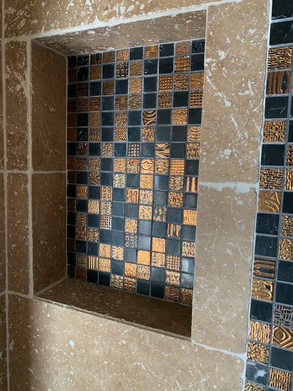
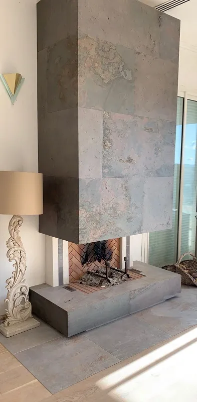

La spécialité maison
Chape liquide
Chape fluide anhydrite ou ciment, dès 15 mm, parfaitement plane et compatible plancher chauffant. On coule, on nivelle, votre sol est prêt à carreler.
Découvrir →
Chape liquide, carrelage, parquet et rénovation de salle de bain. Anthony Borey et son équipe travaillent la matière depuis 2015, du grand format au travertin avec frise feuille d'or.
De la préparation du support à la dernière coupe, on maîtrise toute la chaîne. Pas de sous-traitance, pas d'approximation.

On vient à domicile avec le camion et plus de 80 échantillons. Vous voyez le rendu réel, dans votre lumière, avant de décider.
Vous décrivez votre projet par téléphone ou via le devis en ligne. On cerne le besoin.
Visite sur place avec le camion d'échantillons. Mesures, conseils, choix des matériaux.
Un devis clair et gratuit sous 48h, sans engagement, ligne par ligne.
Chantier propre, photos à chaque étape, finitions soignées. Vous profitez du résultat.
Google★★★★★ 4,9 sur 5
Super professionnel, les explications sont claires, le devis rapide et le résultat parfait. Je recommande les yeux fermés.
Chape et carrelage 60x60 dans toute la maison. Anthony nous a conseillé l'isolation sous la chape. Travail propre et soigné.
Travertin sur environ 70 m² plus la salle de bain. Bons conseils, très haute qualité de travail. Vraiment satisfaite.
Des coupes en arrondi d'une grande précision. Travail de qualité, très professionnel. Anthony est passionné par son métier.
Chape et carrelage opus sur 70 m² plus faïence douche italienne. Chantier impeccable, photos envoyées chaque jour. Bravo.
Un aperçu de chantiers récents en Haute-Provence. Cliquez pour agrandir.




Devis gratuit sous 48h, sans engagement. On se déplace dans un rayon de 2h autour de Manosque.